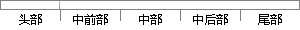

，首先使用了不存在域名（NXDOMAIN）响应。
片段位置图

相似结果|
1
原句片段：，首先使用了不存在域名（NXDOMAIN）响应。
相似片段 1：– 权威域名服务器返回‘请求的域名不存在’的响应(NXDOMAIN)。– 递归服务器...首先,确认日志记录中的这些IP地址是否是你的域名服务器应该服务的范围。如果不是...
相似片段 2：了一个NXDOMAIN错误(因为我们请求的域名不存在,可以...你的计算机首先会向该网络的DNS服务器发出请求,目的...客户端会对它名称的SOA查询响应进行处理,以确定这个...
相似片段 3：域名生成算法(DGA),恶意软件使用一个算法每天随机生成...返回错误(代码3)表示一个不存在的域名或者NXDOMAIN。...首先,钓鱼域名在真的域名上做了细微的修改,保留的...
相似片段 4：首先我们会探讨深度学习的优势,然后我将进一步的通过...我们技术的另一个优点是仅对域名进行识别而不使用...前两个域未被注册,并从DNS服务器接收到NXDomain响应...
相似片段 5：– 权威域名服务器返回‘请求的域名不存在’的响应(NXDOMAIN)。 – 递归服务器...首先,确认日志记录中的这些IP地址是否是你的域名服务器应该服务的范围。如果不是...
相似片段 6：首先我们会探讨深度学习的优势,然后我将进一步的通过...我们技术的另一个优点是仅对域名进行识别而不使用...前两个域未被注册,并从DNS服务器接收到NXDomain响应...
相似片段 7：幸运的是,目标网络的Wordpress实例使用了一个存在漏洞的插件,而攻击者可以利用...是正确的,但你有可能会遇到一些无法解析的子域名(例如响应为“NXDOMAIN”的域名...
|
※ 片段修改建议 ※
近似词参考：- 首先：起首
- 使用：利用
- 响应：相应
系统自动生成语句：，起首利用了不存在域名（NXDOMAIN）相应。
注：本片段修改建议为系统自动生成，仅供参考。